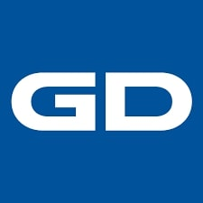

IT professional with 7+ years in the Government of Canada and defence sectors, currently a Technical Advisor (IT-03) at Global Affairs Canada. Technical lead for the department's enterprise identity platform (Azure AD B2C, federated with the GC Credential Federation (GCCF / GCKey) and CanadaLogin over OpenID Connect), including its migration off ForgeRock, and for its Power Platform service. Advise the Director and Deputy Director on architecture, security and licensing, including a licensing change that saves $3M a year, and work with Shared Services Canada (SSC), Microsoft and partner departments to keep critical services running for 50,000+ users.
Security clearance: Secret
Sep. 2022 – Present (4 yrs 2 mos)Global Affairs Canada (GAC)
Nov. 2021 – Sep. 2022 (11 mos)
Global Affairs Canada

Jul. 2019 – Nov. 2021 (2 yrs 5 mos)General Dynamics Mission Systems Canada (Calian)
Jan. 2018 – Apr. 2019 (1 yr 4 mos, part-time)Public Safety Canada
Carleton University2015 – 2019
Bachelor of Computer Science, Minor in Philosophy (graduated 2019)